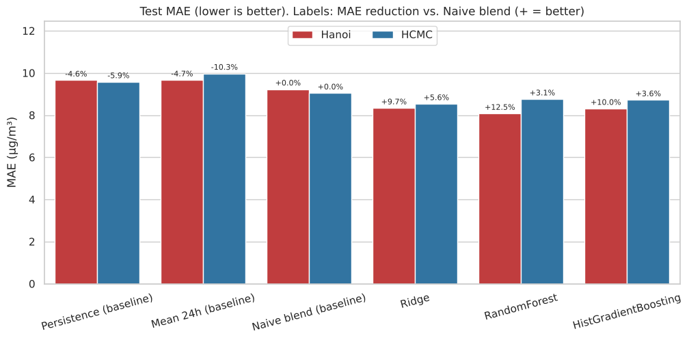
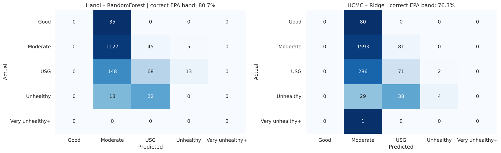
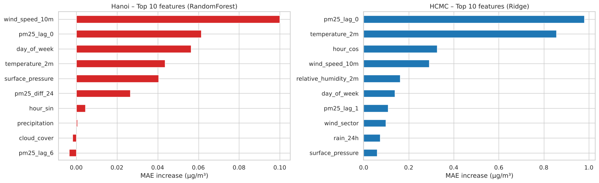

Kết quả trên tập Test
Mô hình của mỗi thành phố được chọn trên Validation; Test chỉ dùng đúng một lần. Chỉ chấm trên giá trị PM2.5 đo thật.
- Hà Nội · MAE
- 8,08 µg/m³Naive blend 9,23 → giảm 12,5%, CI 95% [+3,2%; +20,0%]
- TP.HCM · MAE
- 8,54 µg/m³Naive blend 9,05 → giảm 5,6%, CI 95% [−1,3%; +11,8%]
- So với Persistence
- −16,4% / −10,9%cả hai có ý nghĩa thống kê
- Đúng dải nồng độ EPA
- 80,7% / 76,3%98,4% / 98,6% lệch tối đa 1 dải
Sản phẩm nộp
- Notebook Google Colab ↗ Bản đã chạy trên GitHub ↗ Chạy được Run all; dữ liệu tự tải từ GitHub nếu không có sẵn.
- Báo cáo PDF Tải báo cáo PDF ↗ Mọi con số được đọc tự động từ notebook đã chạy.
- Video trình bày Chưa cập nhật 5–10 phút, YouTube Public hoặc Unlisted.
Nội dung
Mô tả dữ liệu & EDA
Mỗi thành phố một trạm quan trắc, ghép với thời tiết cùng giờ trên một lưới giờ đầy đủ; giờ không có số đo để trống (NaN).
| PM2.5 Hà Nội | OpenAQ v3, trạm 46 Lưu Quang Vũ (mạng quan trắc Hà Nội). Thiếu 32,8% số giờ; từ 11/2025 mỗi tháng thiếu 31–97% và trạm hầu như không báo số liệu buổi chiều |
|---|---|
| PM2.5 TP.HCM | OpenAQ v3, trạm CMT8 (cảm biến giá rẻ AirGradient). Thiếu 8,4% |
| Thời tiết | Open-Meteo Historical Weather: nhiệt độ, độ ẩm, mưa, tốc độ và hướng gió, áp suất, mây. Không thiếu giờ nào |
| Ngưỡng WHO | 15 µg/m³ là ngưỡng cho trung bình 24 giờ, nên so với trung bình ngày (ngày có ≥ 18 giờ đo): vượt ngưỡng ở 91,3% số ngày hợp lệ tại Hà Nội và 98,2% tại TP.HCM |
| Tự tương quan | 0,92 / 0,88 ở độ trễ 1 giờ nhưng chỉ 0,56 / 0,45 ở độ trễ 24 giờ: dự báo trước một ngày khó hơn nhiều so với dự báo giờ kế tiếp |


Chuẩn bị dữ liệu
Nguyên tắc xuyên suốt: mọi đặc trưng tại giờ t chỉ được dùng dữ liệu có đến giờ t.
| Bước | Cách làm | Lý do |
|---|---|---|
| Giá trị sai | PM2.5 ≤ 0 hoặc > 1000 µg/m³ đặt thành NaN | Lỗi cảm biến (Hà Nội có 4 giá trị bằng 0) |
| Giá trị thiếu | Đặc trưng: forward-fill tối đa 6 giờ. Target: chỉ giá trị đo thật | Nội suy hai phía dùng số đo sau khoảng trống, tức nhìn trước tương lai |
| Ngoại lai | Giữ trong target; chỉ cắt (clip) đặc trưng PM2.5 bằng IQRClipper với k = 3, ngưỡng học trên Train | Đỉnh ô nhiễm là sự kiện thật; bỏ đi sẽ làm kết quả đẹp giả |
| Đặc trưng | 23 cột: độ trễ và thống kê trượt của PM2.5, thời tiết, giờ dạng sin/cos; mùa, thứ trong tuần, hướng gió 8 hướng (one-hot) | Giờ và mùa tính tại thời điểm t + 24h, biết trước nên không rò rỉ |
| Chia tập | 70 / 15 / 15 theo thời gian, bỏ 24h trước mỗi ranh giới | Target 24h của tập trước không rơi vào khoảng thời gian của tập sau |

Mô hình hoá
Ba baseline ngây thơ và ba mô hình Scikit-learn. Siêu tham số chọn bằng GridSearchCV với TimeSeriesSplit(n_splits=3, gap=24), tiêu chí MAE.
| Mô hình (Validation) | MAE Hà Nội | MAE TP.HCM | R² Hà Nội | R² TP.HCM |
|---|---|---|---|---|
| Persistence: ŷ = PM2.5(t) | 13,48 | 7,66 | 0,006 | −0,129 |
| Trung bình 24h | 13,75 | 7,72 | 0,092 | 0,005 |
| Naive blend: w·hiện tại + (1−w)·TB 24h | 13,01 | 7,06 | 0,135 | 0,106 |
| Ridge | 12,10 | 7,03 | 0,326 | 0,154 |
| RandomForest | 12,00 | 7,50 | 0,337 | 0,084 |
| HistGradientBoosting | 12,47 | 7,46 | 0,246 | 0,091 |
Đánh giá & phân tích lỗi
Mỗi mô hình được train lại trên Train + Validation rồi đánh giá một lần trên Test.







Kết luận
- Hà Nội: học máy giảm MAE khoảng 12% so với dự báo ngây thơ tốt nhất, và mức giảm này có ý nghĩa thống kê. Tuy vậy chưa xác định được mô hình nào tốt nhất.
- TP.HCM: học máy hơn Persistence một cách có ý nghĩa, nhưng chưa chứng minh được là hơn Naive blend; mô hình cây không giúp gì so với Ridge.
- Hạn chế: mỗi thành phố chỉ có một trạm; dữ liệu Hà Nội suy giảm từ 11/2025 khiến Validation và Test nhỏ, thiếu buổi chiều; chỉ có 22 tháng dữ liệu; mô hình dự báo thấp các giờ ô nhiễm nặng.
- Hướng phát triển: dùng dự báo thời tiết cho thời điểm t + 24h, thêm trạm đo, hồi quy phân vị hoặc bộ phân loại vượt ngưỡng để cảnh báo sớm.